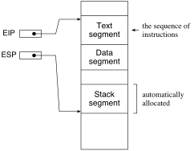

スタックとサブルーチン呼び出し
「スタック」というデータ構造のことは「アルゴリズムとデータ構造」で習ったはずだ。 「後入れ先出し」(last in, first out; LIFO) 方式のデータ構造のことだ。 機械語プログラムは（高級言語から翻訳されたものも含めて）一般に，スタックを多用する。 通常のCPUは，スタックポインタと呼ばれるレジスタと，スタックにデータを追加するPUSH命令，スタックからデータを取り出すPOP命令を持つ。 スタックを扱う機能が予め組み込まれているわけだ。 特に「サブルーチン呼び出し」（C言語の関数呼び出しやJavaのメソッド呼び出しのように，別の場所に書いた部分プログラムを実行し，終わったら呼び出し地点に戻ること）は，スタックを使って実現されている。
今回の目標は以下の通り。
- PUSH, POP, CALL, RET命令の使い方を学ぶ。
- 「EAXの値を10進数で出力する」プログラムをサブルーチンとして記述し，他のプログラムから利用可能にする。
では，各スタック操作命令を見ていこう。
PUSHとPOP
プログラムの実行を開始したとき，OSから「スタック領域」という主記憶内領域が割り当てられる（下図）。
これは，データ領域（.dataセクション）と同じく読み書き可能な領域だが，プログラム中には特に記述せず，OSが自動的に一定の大きさの領域を割り当てる（割り当てられるスタック領域の大きさは ulimit -s コマンドで調べることができる）。

プログラムの実行を開始したとき，スタックポインタ ESP はスタック領域の末尾の次の番地（「スタックの底」）を指している（OSがそのようにESPを初期化する）。 PUSH命令は，ESPの値をオペランドの大きさ分減らし，その番地にオペランドの値を書き込む（下図）。
POP命令は逆に，ESPが指す番地の値をディスティネーションオペランドに読み出し，ESPの値をオペランドの大きさ分増やす。
PUSH / POP は以下のように言い換えることができる。
push eax
は以下の2命令と同じ:
sub esp, 4 ; eaxの大きさ分減らす
mov [esp], eax ; espが指す場所にeaxの値を保存
pop eax
は以下の2命令と同じ:
mov eax, [esp] ; espが指す場所の値をeaxに代入
add esp, 4 ; eaxの大きさ分増やすレジスタの退避と復元
PUSH / POPの基本的な使い方は，レジスタの値の退避と復元だ。 例えば以下のプログラム断片を考える。
push ebx ; EBXを退避
push edx ; EDXを退避
mov ebx, 10 ; 除数
mov edx, 0 ; 被除数の上位32ビット
div ebx ; EAXの値を10分の1にする
pop edx ; EDXを復元
pop ebx ; EBXを復元EAXの値を10分の1倍するプログラム断片だが，ここでEAX以外のレジスタの値は変更したくないとする。 しかし，DIV命令を使う場合，EDXの値は0にしなければならないし，除数を格納するレジスタも必要だ。 このような場合は，上記のようにPUSH / POPを使えばよい。 すなわち，最初に「現時点のレジスタの値」をスタックに保存しておいて，最後にそれを各レジスタに書き戻せばよい。 スタックは「後入れ先出し」なので，退避の順序と復元の順序がちょうど逆になることに注意。
- 図: レジスタの退避と復元
サブルーチン呼び出し
C言語の関数やJavaのメソッドは「サブルーチン」の一種だ。 サブルーチンとは，プログラム中の部分的な処理を抜き出して記述したもので，プログラム中の他の場所から呼び出され，サブルーチンの実行が済めば再び呼び出し地点に復帰する。
通常のCPUは，サブルーチン呼び出しを行う命令 CALL を持つ（ニーモニックはCPUごとに異なる）。 CALL命令は「ジャンプ命令の特別なもの」と考えることができる。 実際，CALLは「現在位置（命令ポインタの値）をスタックに保存した後，ジャンプする」命令だ。 つまり，サブルーチンの実行が終了したら呼び出し地点に戻らなければならないので，それを保存しておくわけだ。
call L0 ; ラベルL0から始まるサブルーチンを呼び出す
は以下と同じ意味 (実際は push eip に当たる機械語命令はない)
push eip ; 現在位置を保存
jmp L0 ; L0にジャンプCALLと対になる命令が，復帰命令 RET (return) だ（これもニーモニックはCPUごとに異なる）。 C言語やJavaの return 文に類似したもの，と思えばよい。 RET命令を実行すると，呼び出し地点に復帰する。 仕組みは単純で，スタックに保存されている呼び出し位置にジャンプするだけだ。
ret ; 呼び出し元に戻る
は以下と同じ意味 (実際は pop eip に当たる機械語命令はない)
pop eip ; 保存してあった実行位置を復元上記のように，CALL / RETは単に「実行位置をスタックに退避 / 復元」しているだけであることに注意。 RETは「スタックトップにある値を戻り番地と解釈してジャンプ」する命令であり，その値がCALL命令によって保存されたものかどうかは考慮しない。 サブルーチンの中でのPUSH / POPの実行回数が釣り合っていないと，誤った戻り番地にジャンプしてしまう（暴走するかも知れないし，セグメンテーション違反になるかも知れない）。
また，「実行位置を保存してジャンプする」以外のことは行わないので，例えば引数を渡したり戻り値を渡したりする処理は，CALL / RET命令の仕事には含まれない。
CALL / RET命令の使い方は以下のようになる（L1〜L8は説明のために付けた余分なラベルだ）。 _start から始まるメイン部の中で，CALL命令を使ってサブルーチンを呼び出している。 実行は L1 (call) → L2 → L3 → L4 → L5 (ret) → L6 → L7 (call) → L2 → L3 → L4 → L5 (ret) → L8 の順に進行する。 CALL命令がL1とL7にあるが，L1では戻り番地としてL6 (= L1の次) をスタックに保存してL2にジャンプし，L7では戻り番地としてL8 (= L7の次) をスタックに保存してL2にジャンプする。
section .text
global _start
_start:
mov eax, 123
add eax, 45 ; 123 + 45
L1: call print_eax ; サブルーチンprint_eaxを呼び出す
L6: sub eax, 67 ; 123 + 45 - 67
L7: call print_eax ; サブルーチンprint_eaxを呼び出す
L8: mov eax, 1
mov ebx, 0
int 0x80 ; exitシステムコール
; eaxの値を10進数で標準出力に出力する
print_eax:
L2: push eax
L3: ...
...
L4: pop eax
L5: ret ; サブルーチン終了- 図: 上記プログラムの実行時のスタックの変化
サブルーチンとレジスタの保存
CALL / RETは実行位置の制御しかしないので，サブルーチンの中でレジスタの値を変更すれば，RETで復帰した後もそのままだ。
もしサブルーチン print_eax がレジスタの値を変更した場合，メイン部から見ると，call print_eax という1行を実行しただけでレジスタの値が破壊されたように見える。
上記のプログラム例では，メイン部は「print_eax を実行してもEAXの値は変化しない」ことを期待しているが，そうするには，つまり「サブルーチンを実行してもレジスタの値が変わらない」ようにするには，サブルーチンの先頭でレジスタの値を退避し，復帰する直前にそれを復元すればよい。
サブルーチンに「レジスタの保存」を期待する代わりに，呼び出し側でレジスタの値を退避 / 復元するのでもよい（下記）。
push eax ; サブルーチン呼び出しの前に退避
call print_eax
pop eax ; 復元ただし，「eaxの値を10進数で出力する」のような汎用的なサブルーチンは，サブルーチン内でレジスタの値を退避 / 復元して呼び出し側の仕事を減らした方が，後々再利用しやすいと思われる。